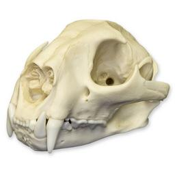
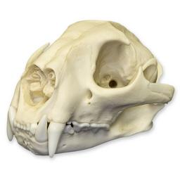

Cabeça
O crânio de uma onça-parda tem em média de 15 a 23 centímetros e seu osso nasal tem forma convexa. Enquanto a mandíbula humana tem algumas articulações e, além de abrir e fechar a boca, pode ainda ser movida um pouco para as laterais, a mandíbula da onça-parda é maciça e estruturada de uma maneira onde só é possível realizar o movimento de abrir e fechar a boca.
Os dentes caninos humano tem em média diâmetro de 8mm e o comprimento de 26mm, enquanto os da onça-parda são maiores, tendo o diâmetro de 12mm e o comprimento que supera os 30 mm.
Enquanto nos humanos a cor dos olhos é a mesma para a vida toda, nas onças-parda a cor dos olhos muda ao longo da vida, sendo azuis quando filhotes e, depois, tornam-se acinzentadas ou douradas quando adulto.
 
